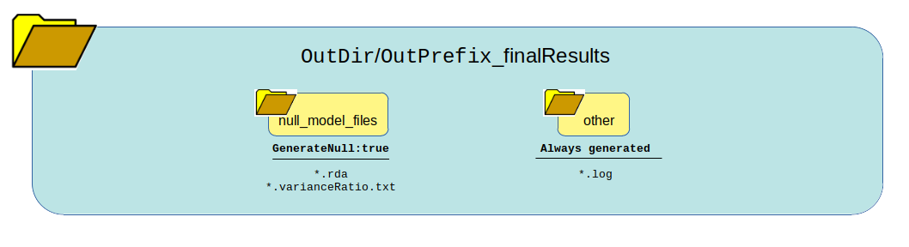
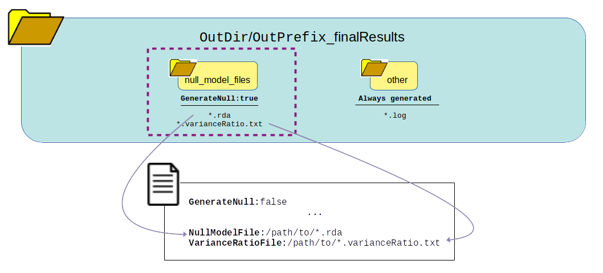

Output Generated¶
This summarizes the expected output depending on how the pipeline logic boolean values are set in the config file.
Full Pipeline with Chunking¶
Setting this logic:
GenerateGRM:true
GenerateNull:true
GenerateAssociations:true
GenerateResults:true
SkipChunking:false
SaveChunks:true
Returns this output:

What can be reused?
{kind=link}
{kind=link}
Null Model only¶
Setting this logic:
GenerateGRM:false
GenerateNull:true
GenerateAssociations:false
GenerateResults:false
SkipChunking:false
Returns this output:
{kind=link}
What can be reused?
{kind=link}
Association Analysis only¶
Setting this logic (see OPTION A: Imputation files need window chunking):
GenerateGRM:false
GenerateNull:false
GenerateAssociations:true
GenerateResults:false
SkipChunking:false
SaveChunks:true
Returns this output:
What can be reused?
Setting this logic (see OPTION B: Imputation files do not need window chunking and will be reused):
GenerateGRM:false GenerateNull:false GenerateAssociations:true GenerateResults:false SkipChunking:true
Returns this output:
What can be reused?